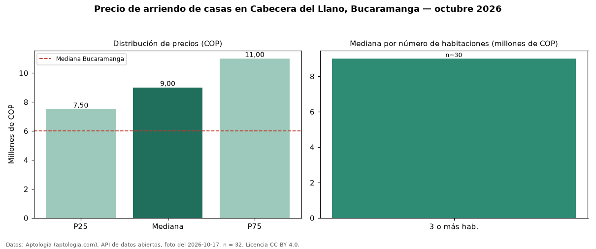

Precio de arriendo de casas en Cabecera del Llano, Bucaramanga — octubre 2026
Con 32 avisos vigentes, el canon mediano de casas en arriendo en Cabecera del Llano, Bucaramanga es COP 9.000.000 al mes. Frente al total de Bucaramanga (COP 6.000.000), el barrio está 50 % por encima. Con la mediana de venta del mismo barrio (COP 1,63 mil millones), el arriendo anual equivale a 6,6 % del precio de venta: una aproximación gruesa a la rentabilidad bruta, porque compara medianas de ofertas distintas. El segmento con más oferta es el de 3 o más habitaciones (30 avisos, mediana COP 9.000.000). El aviso más barato pide COP 3.500.000 y el más caro COP 25 millones. La dispersión es moderada: el cuartil superior (COP 11 millones) es 1,5 veces el inferior (COP 7.500.000). 19 % de los anunciantes publica un teléfono de contacto. Datos: Aptología (aptologia.com), API de datos abiertos, licencia CC BY 4.0 — https://www.aptologia.com/casas-en-arriendo/bucaramanga/cabecera-del-llano. Archivos: PDF de 2 páginas, CSV con las cifras y gráfica PNG.

| Avisos únicos | 32 |
|---|---|
| Percentil 25 | COP 7.500.000 |
| Mediana | COP 9.000.000 |
| Percentil 75 | COP 11.000.000 |
Fuente: avisos vigentes de portales inmobiliarios recopilados por Aptología, deduplicados (mínimo 30 avisos únicos por celda). Precios pedidos, no cerrados. Fecha: 2026-10-18.